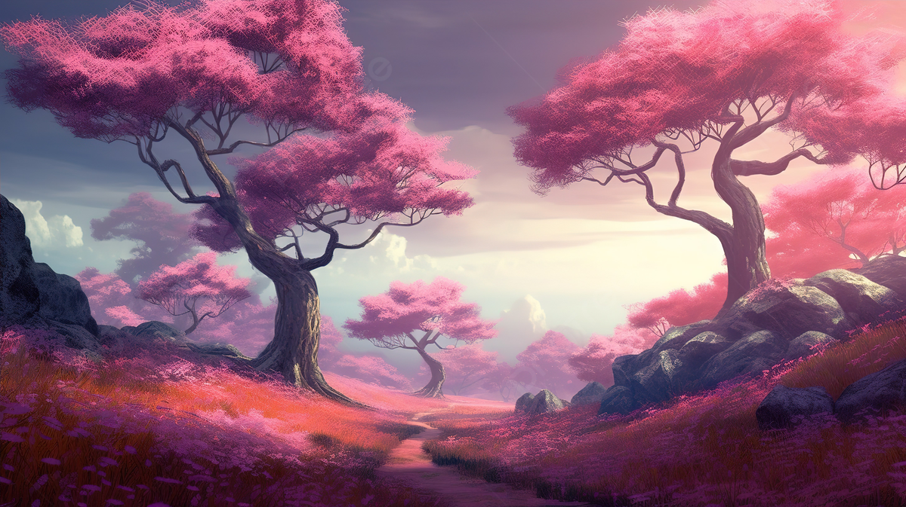

Recentemente, enquanto folheava um livro na biblioteca da escola, encontrei uma carta antiga que falava sobre uma cidade desaparecida, repleta de riquezas e belezas naturais. Na carta, a autora fornecia algumas pistas para localizar essa cidade, e eu decidi segui-las!
Você inicia sua jornada em São Paulo, subindo o Pico do Jaraguá ao amanhecer para descobrir a primeira pista.
No Paraná, você explora a encantadora cidade de Curitiba. Segundo a carta, uma das pistas sugere que, para encontrar a entrada para a cidade perdida, você deve procurar a próxima pista em um dos principais pontos turísticos da cidade. Por qual você decide começar?
No topo do Pico do Jaraguá, você encontra uma antiga inscrição apontando que a próxima pista está localizada no Ceará.
Você opta por encerrar a aventura e retorna para casa, mas não consegue deixar de se perguntar sobre o que poderia ter descoberto.
Nos caminhos tranquilos do Jardim Botânico, você encontra um pergaminho antigo escondido entre as plantas, indicando que a próxima pista está no Ceará!
Explorando a região ao redor da Ópera de Arame, você descobre um caminho oculto entre as árvores, mas acaba se deparando com um espaço que não leva a lugar algum.
No Ceará, a busca pela cidade perdida ganha novos desafios. Você se depara com um riacho que se divide em dois cursos distintos.
De volta ao Jardim Botãnico, você finalmente encontra o mapa antigo. Agora, para o Ceará!
O riacho à esquerda leva você a uma cachoeira escondida, onde inscrições antigas revelam a entrada da cidade perdida.
O riacho à direita termina em uma área pantanosa. Apesar de belas vistas, não há sinais da cidade perdida aqui.
Ao explorar a cidade perdida, você encontra tesouros além da sua imaginação e decide dedicar sua vida ao estudo e à preservação desse incrível lugar!
Retornando e escolhendo o riacho à esquerda, você finalmente encontra a cachoeira escondida e as inscrições que levam à cidade perdida.